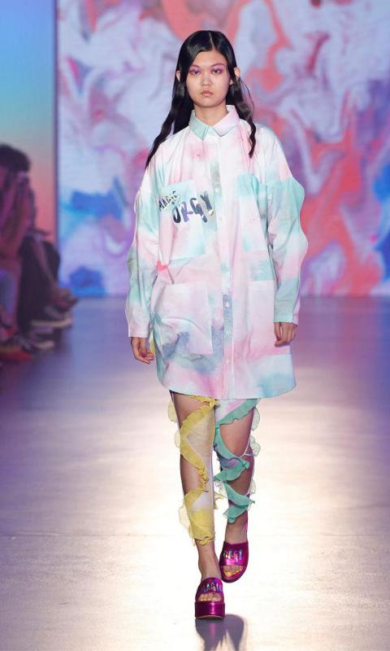
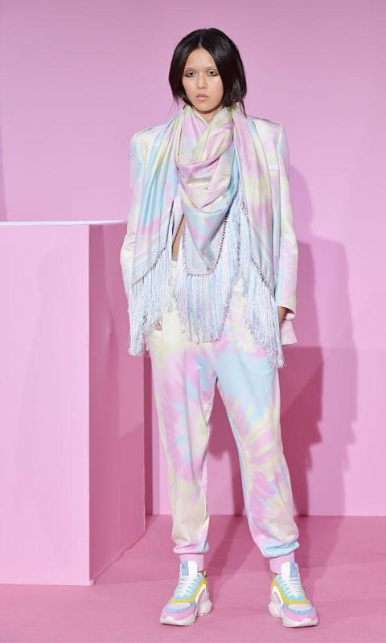
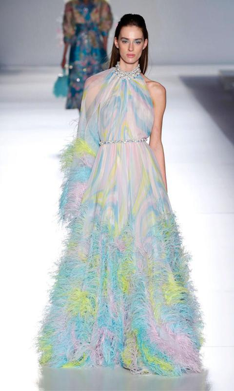
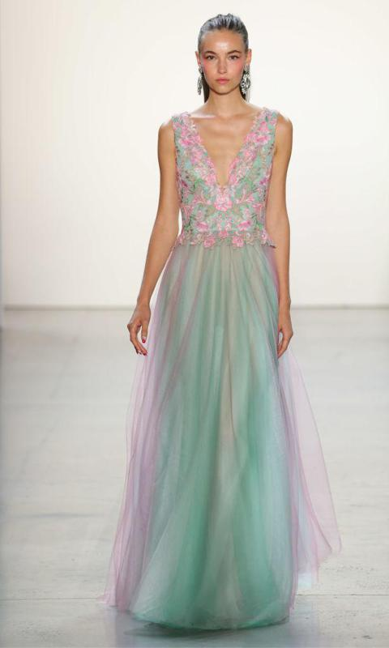

XU HƯỚNG THỜI TRANG

Ombre oversize : Nhà thiết kế người Tây Ban Nha Krizia Robustella đã giới thiệu những mẫu áo sơ mi rộng thùng thình như thế này với cảm giác nam tính trong ombre của màu xanh lam và hồng. Xu hướng ngoại cỡ đã không thể ngăn cản trong vài mùa qua, và con số màu pastel này cho thấy rõ ràng nó vẫn còn rất nhiều thứ để cung cấp.

Một bộ suit đáng yêu : Những bộ đồ nữ tính là một món đồ được yêu thích rộng rãi khác trong thế giới thời trang, và Ralph & Russo đã tạo cho họ một sự biến tấu siêu dễ thương với áo khoác và quần joggers hai mảnh có pashmina lớn và giày thể thao, tất cả đều được bão hòa với màu hồng phấn, xanh lam và vàng.

Chim hoang dã với bộ cánh ombre độc đáo :Sử dụng cùng một bảng màu ombre cho bộ sưu tập Haute Couture Xuân / Hè của họ, thương hiệu châu Âu đã cải tiến chiếc váy dạ hội cổ điển bằng cách thêm phần bất đối xứng ở tay áo và phủ lông vũ vào chân váy để tăng thêm chuyển động và khối lượng cho mẫu áo mỏng manh này.

Nữ thần Nymph : Như thể từ một câu chuyện cổ tích thời hiện đại, nhà thiết kế Nhật Bản Tadashi Shoji – nổi tiếng với những bộ váy dạ hội tuyệt đẹp – đã thiết kế riêng một chiếc váy dài thêu hoa kết hợp giữa hồng và xanh. Chiếc váy mỏng manh này là cách hoàn hảo để kết hợp hài hòa giữa mùa xuân và mùa hè.